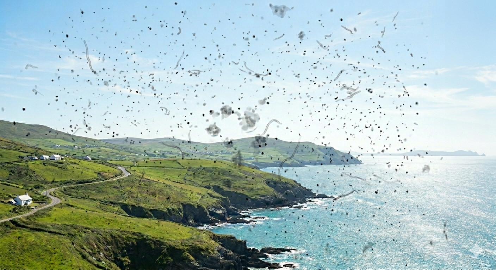
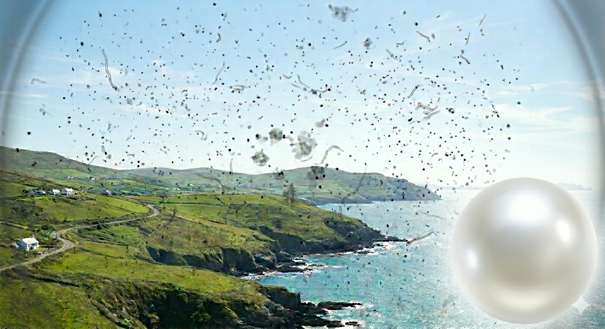
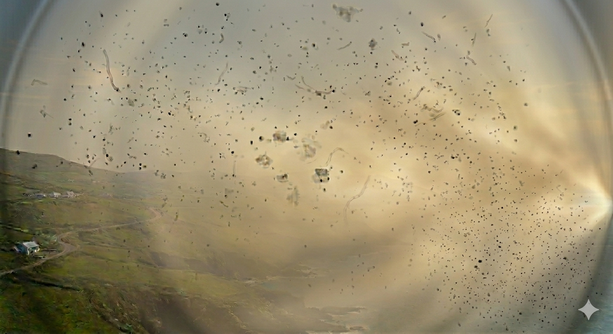

デジタルで、もっと前へ。
デジタルで、私たちの「はたらく」をもっと自由に。
DX推進 - 社内報 Vol. 1 | 2026.04.10
デジタルで、私たちの「はたらく」をもっと自由に。
2025年夏、左目に異常があり、8月末には急遽手術を受ける事態になりました。
業務DXにあまり関連ありませんが、手術前症状イメージ画像3つは生成AIで作成したものです。「専門知識が無くても誰でも簡単に作れる」というのはウソです。試してみる価値ありです。
生成AIもDXに活用できるツールとして、仕組みや使い方、慣れを身に着けてはいかがでしょうか。

2025年8月に入り、ある日突然左目の視野が黒い粒子状のもので覆われました。徐々に広がったのではなく気づいた時には左目視野全体が左画像のような状況でした。実際にはもっと全体的にまんべんなく粒子状のものが見えていました。
夏季休業明けに眼科を受診し「飛蚊症」と診断され、1週間程度経過観察することになりました。異常はその日の夕方からはじまりました。

左目の視野、目頭下隅に鈍い光の球状のものが見えはじめ、それは日を追うごとに大きくなっていきました。「1週間程度の経過観察」という状況もあり、少し様子を見てしまったのが間違いでした。
この段階で受診していれば、レーザー治療により健全な視野に回復できていたのかもしれません。

光はだんだんと鈍くなり、1週間程度で左目の視野ほとんどが覆われました。この時点では顔の前で拡げた手のひらを認識することさえできませんでした。
8月27日に再度眼科を受診、大学病院への紹介状をもらいその足で大学病院へ。「裂孔原生網膜剥離」と診断されそのまま入院、翌日の8月28日に手術を受けました。経過観察、月一の定期検診を余儀なくされました。
左の直線の十字線が、右のように歪んで見えています。そしてウニョウニョとうごめいて見えます。モノも少し縦長に見えます。医師は「ここまで回復するとは思わなかった」と言いますが、それは「回復はここまで」ということなのかもしれません。
目に限らず、皆さんには自分の体調を客観的に判断し、適切な医療機関の利用をお願いする次第です。